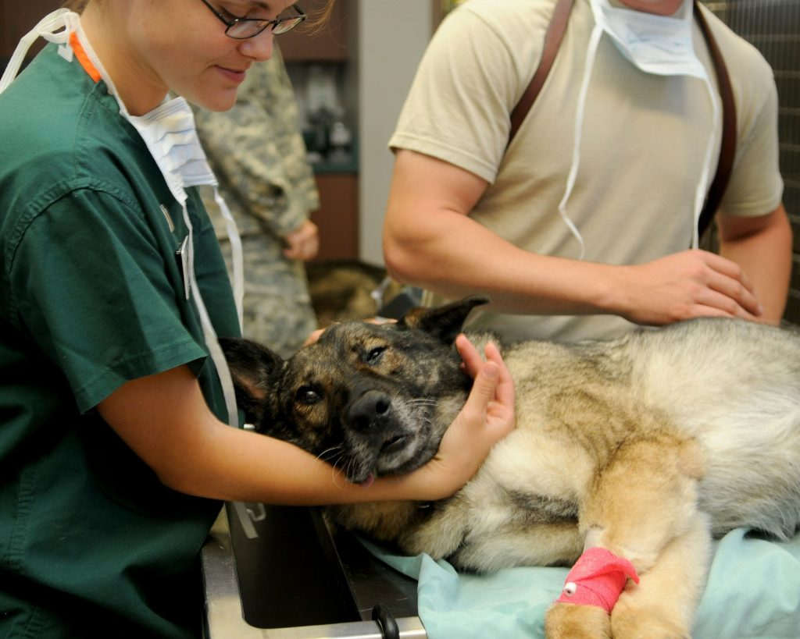

Про нас
AdoptMe.
AdoptMe. — платформа для розміщення та поширення інформації про тварин, які залишились без нагляду. Це універсальна платформа, де кожен зможе зробити свій внесок у порятунок безпритульних тварин — передати знайдену тварину до притулку або взяти звідти нового улюбленця.

Ветклініка Doctor Vet
Наша компанія активно
співпрацює з найбільшою
ветклінікою України – Doctor Vet!Про Doctor Vet
Ми — команда досвідчених
ветеринарів, які понад 10
років допомагають
пухнастим, хвостатим і
пернатим пацієнтам
залишатися здоровими й
щасливими.
